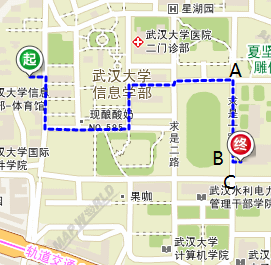
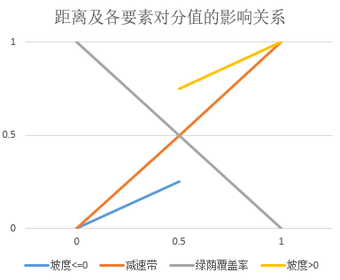

2017/7/12
项目正式开始，网站框架搭建。
2017/7/13
引入CSS框架bootstrap Darkly，引入天地图。
2017/7/16
完善Floyd算法，运行实现。
2017/7/24
建立自行车数据采集网站，建立MySQL bicycledb数据库、point表、polyline表，在武大信息学部地图上采集节点经纬度，存入excel，导入point表。录入polyline表中起始节点、终止节点。两表设计如下：
| 表结构 |
| MySQL表截图 | ||
2017/7/25
实现网站与数据库的连接，操作。实现根据经纬度计算大圆劣弧距离，实现道路分值评估计算。计算方法如下：
| 计算公式 |
从本质上，就是将四个因素归一化[0，1]，然后根据比例换算成[0，100]
2017/7/26
实现通过网站将table point、polyline数据写入point.js、polyline.js，实现天地图展点、展网功能，引入Floyd算法。
2017/7/27
成功将自行车数据采集网站引入该网站，在布局方面做了调整，引入起点终点标签。效果如图：
| 效果 |
2017/7/28
在腾讯云windows服务器IIS配置网站，由于IIS6.0只支持.NET4.0，故降低.NET4.5-->.NET4.0，发现很多引用无法再使用，故重新建立低版本的新网站，为了把主题还原，花了很多功夫。删除了手机版本，使得手机浏览也是电脑的版本。在此感谢同济好友zf，他帮我在阿里云的Linux系统下安装了MySQL，打开了3306端口，使得我本机的workbench可以远程连接并管理云端数据库。
2017/7/29
早晨九点半，艳三阳十高二照度，我就这样开始了海拔采集的外业工作。今天的工作很明确，就是把所有点的海拔都录入数据库，我用的是手机自带的指南针软件，里面带了一个测海拔的功能，虽然精度不高，但是我认为精度很大程度是来源于系统误差，而在我这个项目里，系统误差是可以忽略不计的，因为我需要的是相对高度，而不是绝对高度。换句话说，我只要保证所有点的海拔都用同一部手机，基本上最后算出的坡度的可信度就很高了。软件如下图：
采集过程中，我发现了许多问题。其一，在地图上选好的点，到实地发现有出入，所以需要补充新点；其二，两节点之间有可能有很大的坡度存在，但是两节点之间的坡度却很小，这意味着在线段中需要插入更多特征点来完善整个模型。
删除了部分线段，添加新的线段，网形对比如图：
| 测海拔软件 | 旧网 | 新网 |
增加坡度、距离、路障、树荫覆盖率的系数调节窗口，如图所示：
系数可调后，由距离选最佳路径和由坡度选最佳路径有可能不同，比如从15-->45，路线对比如下：
| 最短距离 | 最小坡度 | 1/2坡度+1/2距离 |
2017/7/30
给网站设置了登陆，注册页面，设计了用户信息数据库表，对访客隐藏更新数据的页面。设置了更新js文件避免浏览器缓存的方法，方法源于http://bbs.csdn.net/topics/391030107?page=1
2017/7/31
又增加了一波节点，路网如下图。决定就在武大信息学部范围内做路径规划。考虑了srtm数据内插海拔的方法，但是觉得精度可能还不如用手机自带的测海拔软件高，所以放弃了。
增加了H5定位的功能，测试发现电脑上仿佛用不了，但是手机是可以定位，精度可用。电脑的可以再想办法解决。
| 更新后的路网 |
2017/8/1
实现腾讯地图搜索关键词api,地址解析api两个接口的连通，引入GCJ02-->WGS84坐标转换的库，自己写麻烦，正好找到现成的js。
腾讯地图是GCJ02坐标系（火星坐标系），而天地图是CGCS2000坐标系，后者与WGS84坐标系基本一致，可以替代。通过接口搜索地名，返回腾讯地图坐标，提取经纬度，转换为天地图坐标，再用infowin（信息窗口）展示在地图上。
引入cnzz站长统计，至于网页尾。
今天想实现点归到线段上的功能，但是没有成功，有很多问题，不想搞了，明天再说！
2017/8/2
今天是个好日子。
关于第一点，不得不吐槽一下腾讯和百度这两家的反地址解析接口，太烂了！首先，天地图我其实已经开始后悔选了，因为连底图都是好几年前的，完全没更新。他的地址搜索接口更是差，信部可以搜到计院旧址。。。其次各种地名与位置不符。选它不就图个坐标不用转换，现在看来确有得不偿失的滋味
接下来是腾讯接口，可能新做地图，很多东西都不完善，一开始本来用的是腾讯的接口，好像二食堂的位置啥都定不对，我就换了百度的接口。一开始不会用，后来搞定了发现和腾讯一个路数，会出现定位不准确的问题（我已经转成WGS84坐标系了），然后我用了百度的place api，也
不准，然后用place suggestion api，在官方代码示例里我发现这个接口是比较准的（大部分点位置都没错），然后我就在地图上用这个关键词，然后找出地址再用geocoding api返回gcj02经纬度，转成wgs84然后展在天地图上，TMD竟然返回的是模糊搜索（说白就是找不到准确的位置）的结果。然后我
就直接用place suggestion api返回的json里面对应位置的经纬度去展点，这回终于对了！这其中用了jquery ui的Autocomplete Widget控件来展示搜索推荐词，搞了我一阵子，最后还不是拜倒在我的石榴裙下。真是
现在初步实现输入地址找到对应点的位置。
关于第二点，可以好好讲一讲，本来也不是个特难的东西，怎耐我数学功底不扎实，想了点时间才想通。
事情是这样的，我一开始实现的，是节点与节点之间的最佳路径，但是我不能要求你们用的时候也正好站在节点上吧，况且节点还未必给你们看呢，嘿嘿。所以，要实现在任意位置，最好就在信息学部范围内的任何一个位置，给出到终点（同样也是任意位置）的最佳路径。这就涉及一个如何把当前位置规划到道路上的问题。有幸看到腾讯的一张图，如下
我是在腾讯地图web service api中路线规划服务文档最后一行看到的，http://lbs.qq.com/webservice_v1/guide-road.html这，，，尼玛就是我要实现的功能啊，找了一圈并没有相关算法的介绍，只好挠头自己想了。直接上草稿
| 坐标系转换 | 点与线的空间关系 | 腾讯路径规划的一张图 |
这张图，想必学过大地测量的人都不陌生，就是经纬度和空间直角坐标系之间的转换关系及推导过程。（字/图丑勿喷）在这里我将地球模拟为半径6371km的球体，一开始的想法是找出点到每条线段的距离最小的一条线段，找到垂足，就是把点规划到线段上了。那么圆弧上的线线垂直，与
空间中的两直线垂直有必然联系吗？答案是有的。线线垂直可以推出面面垂直，两个面垂直又都过圆心，说明圆心在两个面的交线上，两个互相垂直的面与球面所割的两个圆弧在交点处是互相垂直的，因为两圆弧在交点处的切线都垂直于交线。这正是我们要找的规划到线路上的点。如图所示，
A是当前位置，弧BC是一条道路，在空间直角坐标系中，AO⊥BC，过圆心的面AO和面BC得证也互相垂直，那么球心到O点的延长线交弧BC于O'，推出弧AO’⊥弧BC，这个交点O'，就是我们要求的规划到道路上的点。
所以，求出A点到直线BC的距离，找出最小值的道路，但是还不够，点应该要落在道路上，所以还要满足向量OB·向量OC小于零，这样就找出点应该投影的道路是哪一条了。
当然这里面还有一个问题，就是我们可以求出O点的（x,y,z）已及经纬度，但是O'点的经纬度才是我们需要的，真正投影到地图上的是O'点。由上面的图可以看出，其实O和O’的经纬度都是一样的，但是如果由上式（B=arcsin(Z/R)）反推纬度，得到的纬度变小。因为O不在圆上而在圆内，所以对应的Z也比O'的Z小。我们
应该把公式改为B=arctan(Z/(X*X+Y*Y))，这样就是真正用O点坐标求出的经纬度，与O'相同。
关于第三点，好了，我该回寝室嗨皮了~明见
2017/8/3
今天本来想试试换一个底图，找了一圈没有找着天地图可以调用的合适的底图（说白了就是还不会）。在ArcGIS Online摸爬滚打了一圈后，发现可以自己找个底图然后标注地名，关键是不会用天地图调用额。倒是发现了ArcGIS Javascript API，如主页的3D Map就是这个api写的，但是引用了那我之前用天地图api写的那些功能岂不是要重写，想得美，所以我果断放弃了更换底图的打算。
花了好多时间把以前做好的Three.js展示的我武牌坊放到网页上，渲染的范围搞了半天才给缩小。谁知道又出现了.obj和.mtl不能加载的问题，查了一下原来还要设置MIME映射，两个都设置为application/metastream，加载成功的那一刹那我眼泪掉下来。虽然今天正事没干多少，但是好歹浪费了不少时间，也不会觉得无聊了。。。
2017/8/4
整理一下今天的思路。早上把国软片区的道路也选进来，把整个信部的道路阴影覆盖率/减速带个数都统计好了，就剩下76个节点的海拔数据没有采集。中午把数据都记录到数据库中。草稿如图：
|  | |
| 外业手簿 | 节点规划缺陷 |
思考节点规划到道路中存在的问题，如上图。从信息学部学生16栋到信息学部大学生活动中心，我按照距离来选择，所以就是最短路径。但是这条路明显应该从操场的南面绕比较近一些。我
发现了原因：节点规划到B点后，新插入的两条线段AB和CB的分数给的是相同的，也就是默认了这两条线段的距离相同，所以才会选出一条更长的路。
顺藤摸瓜，把四个因素都考虑一遍——距离可以重新计算，插入新的线段不会改变最大距离，有可能改变最小距离。如果新插入的线段小于原本的最小距离，那么按照公式grade=（distance-Dmin）/（Dmax-Dmin），距离这一项的分数会是负值，
如果重新计算出新的最大值和最小值再估分当然是最公平的，但是我看目前的最小距离也就是8米，最大距离是209米，那么如果是新的线段处于0~8米之间，取最小的0米，按上面列出的公式计算，grade=-8/201=-0.0398，如果重新计算的话，grade=0，可以看出，
差距只有0.0398，而且分数是越低越好，所以并没有违背规律，所以在效率上来讲，我选择原本的Dmax和Dmin作为计算分数的依据，是合理的。
至于坡度，两条新的线段的坡度都和原来的是一致的，只不过要注意起点和终点，不要搞错。
绿荫覆盖率本来就是主观打分，所以新的线段就当作不变。而减速带的影响最多是1-2个，所以对于整条路线来说也不会有太大影响，就当做都是0。
2017/8/5
今天心血来潮，就把信息学部所有的地名都录到数据库里，然后展到地图上，明天做一个查询，就不用调用接口，而且地名还不够。
2017/8/7(凌晨)
现在是深夜，昨天忙了一天就为解决一个浏览器内存不足的问题，一直找不到原因，在写的js中找没有释放的变量，找DOM中的元素是否重复，都发现不了问题。然而现在我感觉我找到了，问题应该就出在算法上，就是把点归到道路上的算法。我起初设计的条件是垂足在线段上，同时垂径最短。但是 现在有一个问题，就是如果在地图边缘地区选点，很有可能存在一个点不同时满足这两个条件，导致垂足是null,那么相当于没找到垂足，但是还是要进行接下来的步骤，所以但凡用到这些信息的地方，都使用了初始值0，所以有可能陷入循环等，就显示内存不足。终于想明白了，睡觉！明天分分钟搞定这事。
2017/8/7(早10点)
现在的心情非常喜悦，因为已经解决了内存不足的问题。正如睡前写到的算法问题，我增加了一个判断，比较起（终）点与节点的最短距离同垂径之间的大小关系，这样，所有的情况都被涵盖在内，也就不存在内存不足的情况了。Very Good！
很快的，我又发现了一个问题，就是仿佛和节点距离太近也会导致崩溃。我来研究一下距离公式。
果然，如果提前做一个距离差的判断，比如小于5m就直接把起（终）点设在节点上，同时，如果最小垂径和节点到起（终）点的最小距离差值小于5m，无论垂径小还是大，都把起（终）点与节点设为路径。
经过一番调整，再也没有出现崩溃的情况 ，nice。总算啃掉了一个硬骨头，接下来要慢慢实现想要实现的功能，罗列一下：
good,搞定了留言板功能~看着还挺像样的嘛。明天设计分页功能和回复功能
2017/8/8
完成留言板分页功能，在考虑要不要把项目日志搞成一个固定的模板，可以直接编辑的那种，就不用每次在.aspx文件里写了。
完成了留言板回复的模块，不过暂时没做对话类型的，只能“你一言我一语”。
用echart做了一个路径优化分析关系图，效果还可以。
2017/8/10
今天用modal模态框展示了三个统计图，分别是道路长度、坡度和绿荫覆盖率条形统计图，用的是echart库，效果还可以。从长度统计可以看出，采集的大多数道路的长度在15-100米之间，但是也有小于十米和大于100米的道路，所以道路长短不一，分布均匀，十分详细。
坡度图看出，20%的道路坡度在0.001~0.01，16%道路坡度>0.01，说明信息学部的路整体比较平缓，但是不乏坡度较大的道路。
绿荫覆盖率图看出，70%的道路绿荫覆盖率大于0.6，说明信息学部的树木普遍高大茂盛，而且反映出绿化做的好，且适合骑单车出行。
2017/8/11
今天尝试了一下用热力图反应武大的高程情况。使用的高程数据是SRTM 90(分辨率为90m)，在http://srtm.csi.cgiar.org/可以下载GeoTiff或者ArcInfo ASCII两种格式的数据，数据格式请参考一篇博文http://seisman.info/srtm.html。我选择后者，容易一点。选择30N~35N，110E~115E的数据。图幅左下角地理坐标是（109.99958381761,29.999583309109），共6001行*6001行列，每格跨0.00083333333333333度。我在地图中找出武大校区的矩形范围，然后将.asc文件读取出相应
范围的高程数据，用天地图提供的heatmap.js接口展示出来。可以看出珞珈山和老图的海拔明显高于其他地方，与实际相符。但是如果作为道路坡度的原始数据，却不合理，因为精度不够。参考文章《SRTM DEM高程精度评价》詹蕾; 汤国安; 杨昕。
因此，海拔采集还是用原本的方式更为合理。
晚上自制了网站logo,是自己搭的牌坊模型的截图，抠出来二值化了再添加Loadchoose完成设计。

|
|
| 海拔热力图 | 原网站logo |
2017/8/12
重新设计了logo，并且设计了地图的使用说明。优化了一些功能，比如点击起点后再点击输入input，起点位置不会改变等。
2017/8/13
增加线路指向的提示板功能，用于指路， 表示上坡，表示缓坡，
表示上坡，表示缓坡， 表示下坡。同时显示距离和方位角。另外增加了指南针。
表示下坡。同时显示距离和方位角。另外增加了指南针。
2017/8/14
今天把路线提示的功能进行了优化，把相邻路线方向一致的归为一个，距离增加，把坡度变化在同一栏反应。明天要把路线的坡度变化用折线统计图来表示出来，同时进行路线总长度、上坡下坡统计、减速带统计、平均绿荫覆盖率统计。
2017/8/15
今天改变了网页的主题，原本的darkly变成了lumen好看多了。对地图页的版式进行调整，将地图充满整个页面，感觉效果好很多，同时增加了一些覆盖物等。
同时域名备案完成了，域名是：railwayhs.cn！
2017/8/20
几天没记录了，一次性记录下这几日的工作。
今天费了点时间把平均绿荫覆盖率的算法写好，然后把路线提示中的同一个方向，相邻且相同的坡度化简为一个，这样就不存在重复现象。最后其实就添加了五行代码，但是想的过程走了很多弯路。
2017/8/22(凌晨)
今天将网页在移动端适配，蛮顺利的，但是相当累。提醒大家一点，在移动端使用map页面时，向上拖动可以全屏，但是可能会把下面的button也网上拖动，解决方法是点击网页左上角的网站名“BikeMap”，网页就可以恢复全屏。
2017/8/25
记录一下这几天的事。
重新思考了算法存在的问题。看一下两图：
.jpeg)
|
.jpeg)
|
| 坡度确定 | 距离确定 |
从以上四幅图可以看出，坡度确定出的线路存在一定的问题，我开始的算法是对所有坡度排序，坡度越小越好，得到的分值越低，然后选出总分值最低的路线。但是坡度与距离不同，起点终点相同的两条线路，如果节点数越多，难免会将分值累计得高，而原本分值高但是节点极少的线路，反而可能总分值更低。而距离是和节点数无关的属性。
将每段的坡度分值进行累计确实有不合理之处。Flody算法适用的对象应该是可以以整段路径的最终量作为标准的元素，距离可以，减速带个数也可以。但是坡度和绿荫覆盖率不行，因为这两个量都不能累加。
我想到的解决方法是：要想体现这两个因素，就必须将这两个因素用另外的可以累加的因素来表示，同时与节点数无关。人们选择一条路，是以消耗的体能越少越好为前提，再谈其他功能，所以我觉得这两个因素都可以转化为距离。那如何转化？
比如坡度，找出所有上坡道路的距离（因为下坡从理论上不消耗体能，所以就不考虑下坡的距离），下坡的距离都当做0，然后进行最短路径算出上坡最短的路，这样便符合人们所谓的省力的骑行路线。若比重为1，就将所有上坡距离投入计算。这样算出来应该是最省力的骑行路线。
同理，找出所有绿荫覆盖率低于0.6的道路的距离（0.6是由统计图来确定的），进行最短路径查找，其余路段距离都设为0（即最短，比如绿荫覆盖率为1的道路，就相当于距离为0，最舒适）。最后计算出绿荫覆盖率低的道路最短的路线。
2017/8/27
这两天忙的有点焦头烂额，总结一下发现的问题和解决的方法。
关于2017/8/25日志中说到的算法问题，我对权值的函数进行了反复的修改和调试，最终在今天找到了我认为理想的函数。计算方法是：
|  | |
| 计算分值公式 | 各因素对分值的贡献 |
该公式的含义是：各因素归一化后乘以用户输入的权重之和与当前距离的乘积，相当于对距离赋权。由第二幅图可以看出，减速带与距离对道路分值的贡献是正相关，即减速带越少，道路越近，路越好；绿荫覆盖率与距离的贡献是负相关，即绿荫覆盖率越高，道路越近，路越好。
坡度与距离的贡献是正相关，但是上坡和下坡的贡献应有所差别，将上下坡的贡献值认为地拉大，效果比正常函数要更好。这也是根据实验最后确定的结果。
另外，针对Floyd算法时间复杂度过高，计算大约要花3秒钟的问题，解决方法有两个，一个是换一个算法；第二个是将Floyd事先算好的P矩阵和D矩阵保存在js文件中，计算时共有三种情况，一种是增加四条线段，删除两条线段（规划到垂足）；一种是增加两条线段（规划到节点）；最后一种是不增加线段（点在节点上）。
对于这三种情况，后两种都无需再算，可以直接找到最短路径，而第一种情况最复杂也只有四种路径需要额外计算，就是起点和终点都规划到垂足处。分别计算四种情况的总分值，比较即可得到最短路径，也无需对于整个路网进行Floyd。
我选择换一种算法。。。所以就增加了Dijkstra算法，顺便增加拱用户选择算法的功能，当然默认是Dij，因为快不少。
2017/8/28
今天终于用echarts把三维地图展示出来了，我感觉效果还可以，唯一不足的就是底图是在天地图上截图的，分辨率低得实在是不能看，如果有可以提供更高分辨率的底图，我感激涕零！
今天新增了PC端结算过后弹出的工具栏，将一些功能都放在里面我觉得比直接弹出效果可能要好一些。Anyway,it's a nice day.明天决定骑着我的自行车去文理学部和工学部探路，不知道一天够不够。。。
2017/8/30
这两天跑遍了文理学部和工学部的大街小巷，才发现在这里生活了三年，却有那么多地方没去过。武大依山傍水，地势起伏非常大，可以说在武大骑自行车是非常刺激的，特别是珞珈山的周边的道路。在山路中骑行很爽，希望你们也可以去体验。
昨天有个快递小哥找我问路，信息学部19栋，你们知道在哪么？他估计是不会用地图，我当时拿出手机打开自己的网页，定位了自己的位置，然后搜索信息学部19，查出路线，然后告诉他怎么走。当时我心里有种得意之感，好希望所有在武大送餐的外卖小哥都可以用到我这么良心的网站。
2017/9/1
奋斗了一整天，不知不觉就过12点了。八月走了九月来。九月注定不会太平，也会决定很多人的人生轨迹。无论如何，尽人事，听天命。
今天重心放在体现网站特色上，很明显，BikeMap核心的功能就是路径规划的因子丰富，除了普通的“距离”，还有“坡度”、“绿荫覆盖率”和“减速带”。之前只有自定义因子的权重，想了一下觉得可以做的更个性化，推出不同模式——经典和特色。经典就是距离唯一，特色就是其他三个因子唯一。我觉得这个板块做的和我想象中的很接近，非常满意。一开始想用雷达图来表示各因子之间的比例关系，
但是后来看到bootstrap中可叠加的进度条时，我改变了心意。看上去效果蛮好的！目前还有一个点子，实现登陆用户的历史路径和系数的建库和展示，多给一些登陆用户以特权和服务，岂不是美滋滋。明天慢慢实现~睡了zZ
2017/9/2(凌晨2点)
又花了整整一天搞定一个功能——轨迹保存和历史轨迹查看。该功能仅登陆用户才可使用。实现这个功能的难点在于如何在页面不刷新的情况下，调用C#内部的函数与数据库进行交互，以及前端控件的传值问题。解决方法是：用UpdatePanel控件，保证期内控件不刷新页面却可以执行C#函数。我在该控件内放一个asp:button，设置其ClientIDMode="Static"，然后在js中通过document.getElementById("Button1").click()来触发C#中的Button1_Click事件。 另外，需要将前端的起点和终点传到后端，通过input设置tyepe='hidden'，runat='server'，然后如果在aspx页面中写js就用< % id.ClientID % >的方式写input的id，如果是调用js文件，就在aspx中声明全局变量globals.controlIdentities，然后在js页面中用变量代替id。以上是今天一整天的成果，明天大哥就回校了，睡了睡了，真累。
2017/9/2晚
今天把武大整个校区主要的地点都录入了。今天遇到的问题是在excel中数据导入MySQL中出现中文乱码的问题，编码问题。最后将excel存入csv，然后改成utf8编码，再用MySQL workbench导入csv即可。
🙈Three years later...
2020/7/15晚
时隔近三年又回来折腾下网站，因为之前用的asp.net+mysql，后来服务器没续费，想想地图资源其实都写到前端js中了，只是不能更新数据而已，影响不大，所以花了几小时把网站去后端，改为纯前端网站。